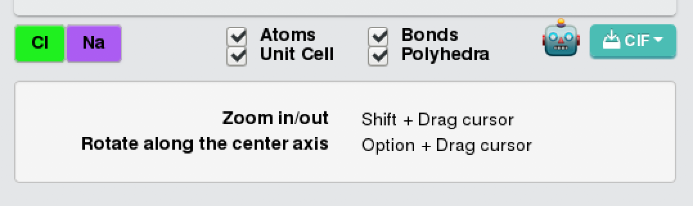
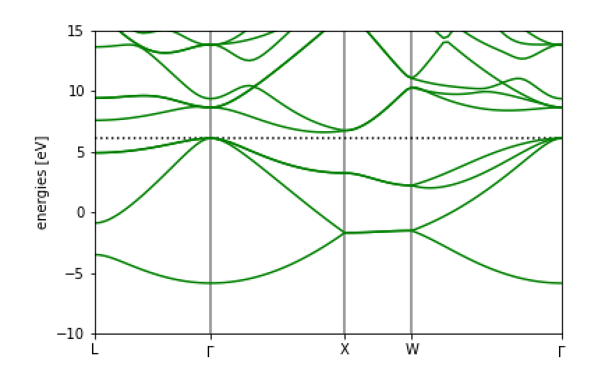

第一原理計算高速チュートリアル
一つ一つは見ていくのは面倒！という人のために、このページにあることを実行すれば第一原理計算ができるようにしました。 順番にやってみてください。固体の第一原理計算をQuantum Espressoで実行することを念頭においています。 ここに書いたことはあとで項別にまとめる予定です。
最初に行うこと
MateriApps LIVE!のインストール をみて、MateriApps LIVE!のインストールを終わらせてください。
ASEのインストール
左下のツバメみたいなアイコンをクリックして、System ToolsからLXTerminalを選んでターミナルを出し、 以下のものを打ち込んでください。これは全て仮想マシン上で行われていますので、お使いのPCへの影響は全くありませんので安心してください。
sudo curl -kL https://bootstrap.pypa.io/get-pip.py | sudo python3パスワードを聞かれますが、これはlive と打ち込んでください。 次に、
sudo python3 -m pip install --upgrade --user aseと入れてください。
次に Jupyter Notebookの起動 をみてJupyter notebookを起動してください。
結晶構造の入手
左下のツバメメニューからWebブラウザFirefoxを起動し、Materials Project URL:https://materialsproject.org/ に移動してください。 ここには様々な固体の情報がデータベース化されています。 無料で利用できますので、googleアカウントをお持ちであれば簡単にログインできます。
NaClの構造の入手
さて、NaClの構造を入手してみましょう。 周期表の表示があるので、そこでNaをクリックするか、あるいは検索窓にNa-Clなどと入れれば見つけることができます。 NaClのどれかをクリックして表示させます。 ここで、

のCIFをクリックし、「Computed」を選んでみましょう。 これでDownloadsディレクトリにファイルがダウンロードされました。
Vestaによる結晶構造の確認
次に、ターミナルに戻ります。 ここで、
cd ~/Downloads/でDownloadsディレクトリに移動すると、ファイルがあるのがわかると思います。 そして、
vesta NaCl_mp-22862_computed.cifとすればVESTAが立ち上がり、結晶構造を見ることができます。 VESTAは非常に優秀な「結晶構造、電子・核密度等の三次元データ、及び結晶外形の可視化プログラム」です。 https://jp-minerals.org/vesta/jp/
ASEでの第一原理計算
ASEでの取り込み
保存したファイルをjupyter notebookでASEを使って取り扱ってみましょう。 保存したファイルは
cp ~/Downloads/NaCl_mp-22862_computed.cif ~/ASE/で作ったフォルダにコピーしておきましょう。 あとは
import ase.io
rocksalt =ase.io.read("NaCl_mp-22862_computed.cif")すれば読み込むことができます。
第一原理計算のテスト実行
このあとは、
NaCl結晶の格子定数 のようにやればよいです。
具体的には、ターミナルでまず
擬ポテンシャルのダウンロード：
cd /usr/share/espresso/pseudo
sudo wget https://www.quantum-espresso.org/upf_files/Na.pbe-spn-kjpaw_psl.1.0.0.UPF
sudo wget https://www.quantum-espresso.org/upf_files/Cl.pbe-n-rrkjus_psl.1.0.0.UPFNaとClの擬ポテンシャルをダウンロードします。なお、他の擬ポテンシャルは https://www.quantum-espresso.org/pseudopotentials にあります。
次に、Jupyter notebook上で
from ase.build import bulk
from ase.calculators.espresso import Espresso
from ase.constraints import UnitCellFilter
from ase.optimize import LBFGS
import ase.io
pseudopotentials = {'Na': 'Na.pbe-spn-kjpaw_psl.1.0.0.UPF',
'Cl': 'Cl.pbe-n-rrkjus_psl.1.0.0.UPF'}
#rocksalt = bulk('NaCl', crystalstructure='rocksalt', a=6.0)
rocksalt =ase.io.read("NaCl_mp-22862_computed.cif") #Material Projectでダウンロードしたものを使う場合。
calc = Espresso(pseudopotentials=pseudopotentials,
tstress=True, tprnfor=True, kpts=(3, 3, 3))
rocksalt.set_calculator(calc)
ucf = UnitCellFilter(rocksalt)
opt = LBFGS(ucf)
opt.run(fmax=0.005)
# cubic lattic constant
print((8*rocksalt.get_volume()/len(rocksalt))**(1.0/3.0))コードでは、格子定数を最初は6として、設定したあと、構造最適化をしています。最後に、構造最適化して出てきた格子定数をプリントしています。
これを実行すると、
Step Time Energy fmax
LBFGS: 0 21:27:48 -1960.836397 0.0625
LBFGS: 1 21:28:01 -1960.836540 0.0501
LBFGS: 2 21:28:13 -1960.834692 0.0338
LBFGS: 3 21:28:26 -1960.833702 0.0079
LBFGS: 4 21:28:39 -1960.834037 0.0006
5.661404166984403と出ます。 これで第一原理計算でNaClの構造最適化ができました。
第一原理計算のテスト
Siのバンド構造
Siのバンド計算をやってみましょう。 まず、バルクのSiを用意し、計算としてQuantum Espressoを使うことにします。
from ase.build import bulk
from ase.calculators.espresso import Espresso
atoms = bulk("Si") #バルクのSiの用意
pseudopotentials = {'Si':'Si.pz-vbc.UPF'} #擬ポテンシャルの設定
input_data = {
'system': {
'ecutwfc': 64,
'ecutrho': 576,
'nbnd' : 12 },
'disk_io': 'low'} #Quantum Espressoのパラメータ
calc = Espresso(pseudopotentials=pseudopotentials,kpts=(4, 4, 4),input_data=input_data)
atoms.set_calculator(calc)Quantum Espressoのパラメータをinput_dataで入れることができます。 詳しくは http://www.stat.phys.titech.ac.jp/SATLqetutorial/index.html が参考になると思います。
ここのcalcを別のものにすると、別の第一原理計算ソフトを使うことができます。 原子配置が与えられた時にエネルギーが返ってくればいいので、第一原理計算である必要もありません。 詳しくは https://wiki.fysik.dtu.dk/ase/ase/calculators/calculators.html を見てみてください。
次に、自己無撞着計算をして、電子密度を決定します。電子密度が決定されれば、各k点での計算をすることでバンド図を 描くことができます。
atoms.get_potential_energy()
fermi_level = calc.get_fermi_level()
print(fermi_level)次に、バンド図用のバンド計算を行います。
input_data.update({'calculation':'bands',
'restart_mode':'restart',
'verbosity':'high'})
calc.set(kpts={'path':'LGXWG', 'npoints':100},
input_data=input_data)
calc.calculate(atoms)となります。ここで、kptsのpathに好きなブリルアンゾーンの点を入れることで、簡単にバンド図を描くことができるのがASEの面白い点です。 L点、Gamma点、X点、W点、Gamma点の順番にバンドを描きます。
計算が終わったら、図をプロットしましょう。
import matplotlib.pyplot as plt
bs = calc.band_structure()
bs.reference = fermi_level
bs.plot(emax=15, filename='Si.png')でできます。
得られた図は

となります。よくみるSiのバンド図になっていますね。